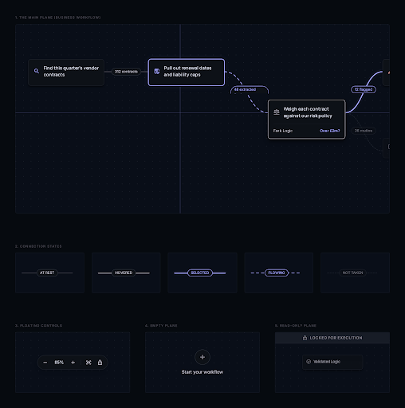
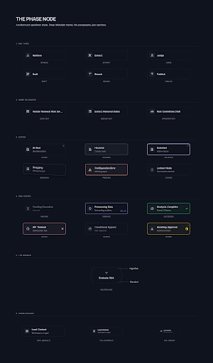
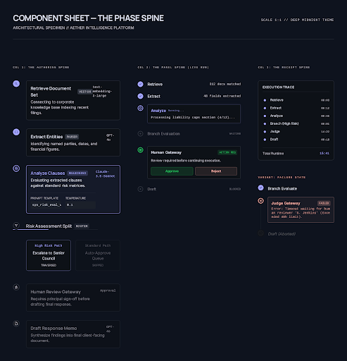
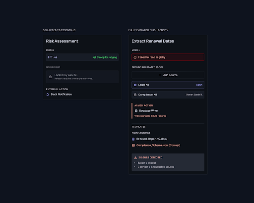
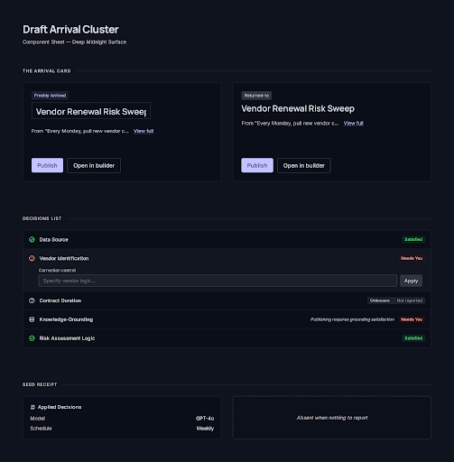
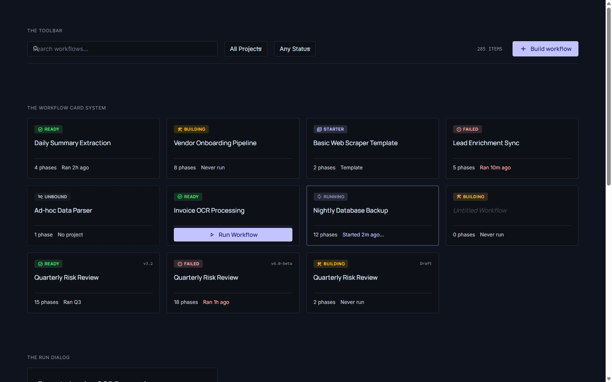
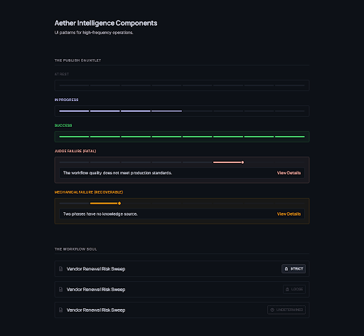
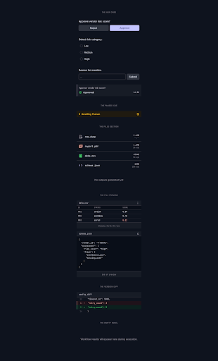
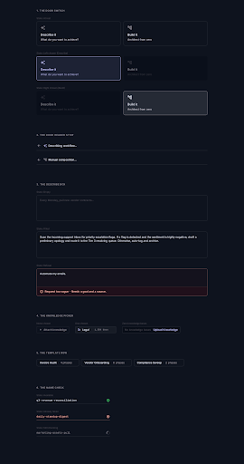
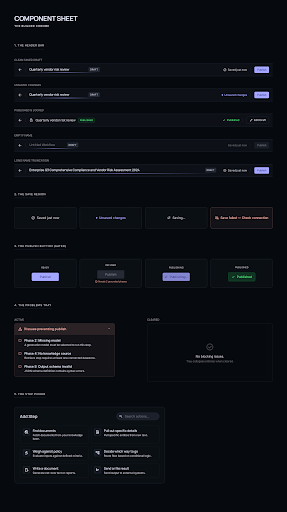

Not pages — components. Every atom of the workflow product drawn as a specimen sheet showing all of its states at once, including the canvas itself. Pages re-derive layout; component sheets are where the language actually gets decided.
⭐ The adopted mindset is now baked into the tool. Two rules, held together: text is noise — cut it, and the purpose must survive the cut. The user must never lose what a workflow is FOR and what it is doing for them right now; everything else is a value, a state word, or gone.
Also added, and it worked: draw the component, not the app — and never name the mechanism to the user. Zero app-shell leaks and zero stock photography across all nine sheets, against three shell duplications and three stock portraits in the page pass.
⚠ Still direction, not an acceptance bar. These render zero shipped components. The next step is a normal sketch that renders the real ones in this language — that sketch is the bar, never this.

The authoring surface, and — the point of the re-run — connections that say what flows along them in five distinguishable states. Steps named as business work, never machinery.

Six types, six interaction states, six run states, the fork-shaped router node, and three zoom sizes — the product's single most repeated atom.

One spine language at authoring width, panel width and chat-receipt width — plus a branch that skips, a failed run, and a paused one.

The densest form in the product, drawn twice — collapsed to essentials, and fully open — with the grounding switch that visibly refuses.

The receipt for what the agent decided: the arrival card that must survive navigation, five decision rows in three states, and the seed receipt.

The workflow card in every state it must survive — including an empty name, a failed run, and three identical titles adjacent — plus run, fork and delete.

Eight checks as one compact strip, the judge's hard wall with no override anywhere, the verdict in plain words, and governance in three states.

At its real 380px: the ask card in three question shapes plus answered, the paused cue, accumulating files, previews, the diff, and the resting empty state.

The fork, the persistent header strip that stops the describe box appearing twice, the box refusing an input too short to act on, and templates that seed rather than branch.

The header bar in five cases — including an empty name and a name too long — the four-state save region, the gated publish button, the problems tray, and the step picker as a colleague's verbs.
The six moments a risk manager travels: say what you want → the agent proposes → review and correct → put it to work → it runs and asks → the outcome. Plus where-am-I, the hand-offs, and the three points where a human is required.